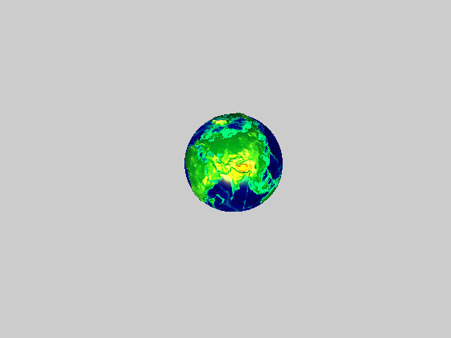
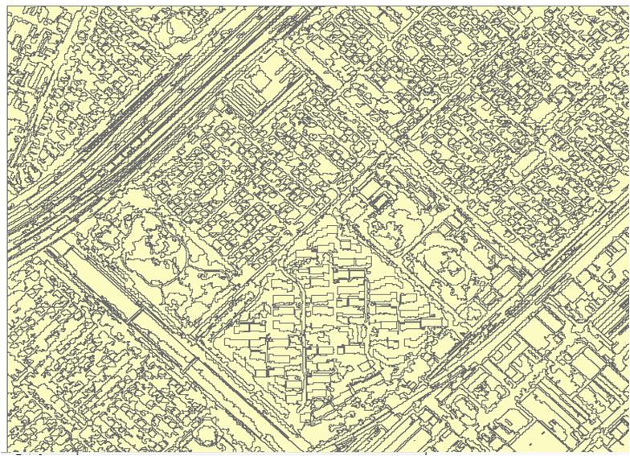

This is a site for image processing and pattern recognition.
The image ranges from multiple spectral images to digital surface model (DSM).
Satellite imagery and aerial imagery.

- Image enhancement

- Image segmentation

- Classification
- Building extraction and modeling

- road extraction and modeling
- AOD retrieval
- Atmospheric correction
Contact and support
lily-hust@163.com